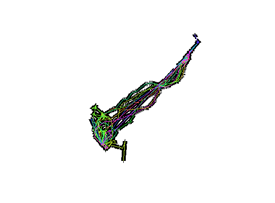

Behavior of Pacific Walruses Tracked from the Alaska Coast of the Chukchi Sea.
Data set is provided as a 'trip' object. This is the abstract for the work:
"We tracked movments and haulout foraging behavior of walruses instrumented with satellite-linked data loggers from the Alaskan shores of the Chukchi Sea during the autumn of 2009 (n=13) and 2010 (n=2)." Jay, C. V. and Fischbach, A.S.

##dontdoanything ## library(mapview) ##mapview(as(walrus818, "SpatialLinesDataFrame"), burst = TRUE)